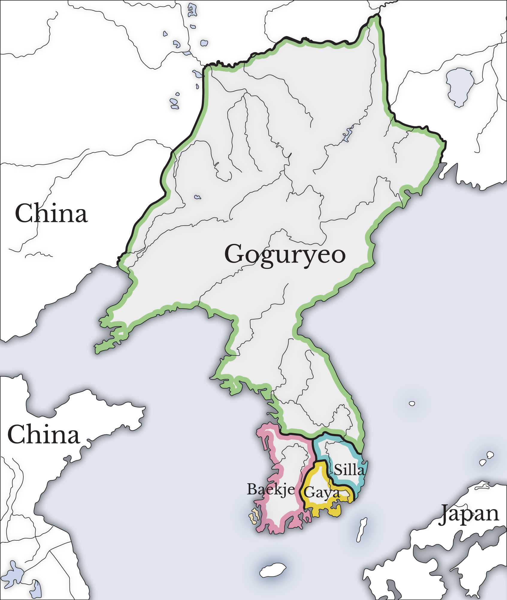
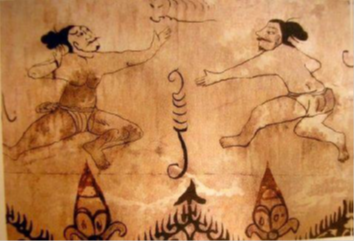
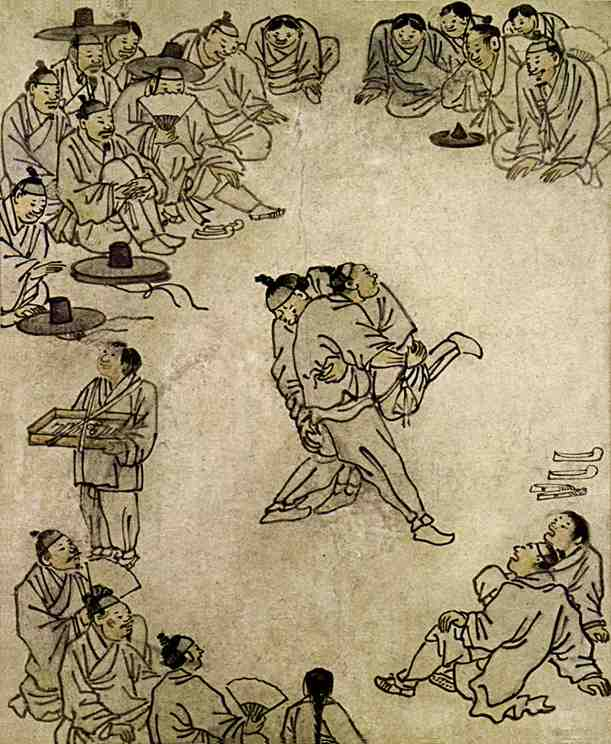
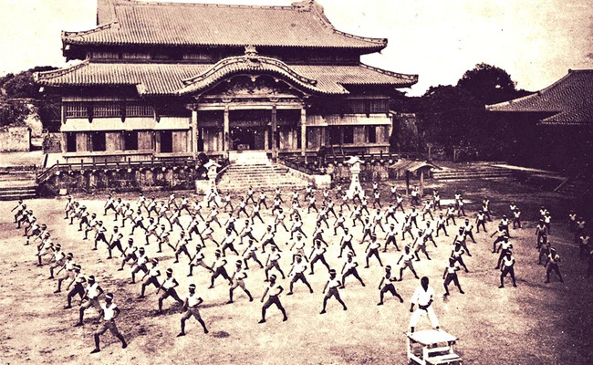
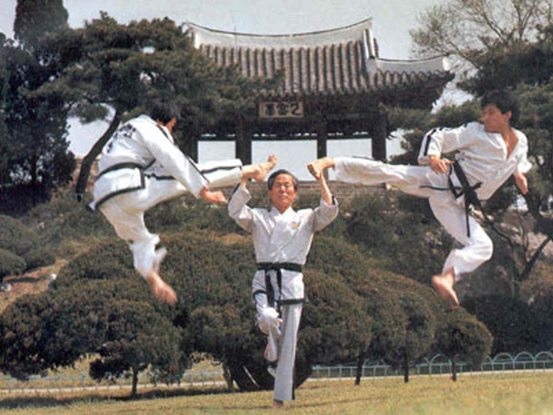

Escuela "nombre de la escuela" de Taekwondo
Un poco de historia del Taekwondo
Los maestros e instructores coreanos, debido a su fuerte nacionalismo y resentimiento tras la ocupación japonesa por 35 años (1910-1945), (periodo donde muchos de los maestros precursores del arte se entrenaron en karate, judo o kendo) según Park (1993, p. 241–274): y tras la guerra de Corea (1950-1953) donde se produjo la división actual del país en Corea del Norte, y Corea del Sur, ubican los orígenes del taekwondo remontándose al siglo V d. C., a la práctica del arte marcial nativo llamado taekkyon, arte aún practicado, que incluso ha sido declarado patrimonio inmaterial de la humanidad por las Naciones Unidas.
La evidencia de su práctica fue hallada en tumbas antiguas por arqueólogos japoneses durante la ocupación, donde algunas pinturas murales mostraban a dos hombres en una escena de pelea.
Antes de la Corea moderna se podían distinguir los antiguos tres reinos en Corea, siendo estos:
Goguryeo (37 a. C.-668).
Baekje (18 a. C.-660).
Silla (57 a. C.-936).
Los militares de la dinastía Goguryeo desarrollaron un estilo de boxeo o arte marcial o «kempo coreano» llamado kwon bop, basado en diversos estilos chinos, pero adaptados a sus propias necesidades.
En esa época también se popularizó un estilo de arte marcial que daba mucha importancia a las patadas en lugar de los puñetazos. Este estilo de defensa personal sin armas es el denominado taekkyon
Otro arte marcial de gran importancia en esa época fue el subak que trataba del entrenamiento en armas tradicionales como la espada, el arco y la lanza. Se creó un cuerpo de guerreros organizados instruidos en este arte, denominado sonbe. En el año 400, el reino de Baekje intentó invadir el reino de Silla.
Se dice que Gwanggaeto, apodado «el grande de Goguryeo», envió 50.000 tropas Sonbe de apoyo al reino de Silla, lo que supuso el primer contacto del reino de Silla con el subak.
La dinastía Silla unificó los reinos después de ganar la guerra contra el reino de Baekje en el año 668 y contra el de Goguryeo en el año 670 d. C. Sus guerreros, los caballeros florecientes o Hwarang desempeñaron un papel importante en la unificación de la antigua Corea, pero posteriormente cayeron en el olvido debido al abuso de su poder político, por lo que fueron reemplazados por los nobles.
El Taekwon-Do fue registrado por primera vez ante el Estado coreano el 11 de abril de 1955 en Seúl por Choi Hong Hi, quien para su creación se basó en todo lo que aprendiera antes de su juventud como estudiante del taekkyon, antes de la ocupación japonesa de Corea (1910-1945), periodo donde el joven Choi fue protagonista de hechos que marcarían su vida y lo llevarían a impulsar la creación del taekwondo. Tras cumplir sus 20 años, Choi fue enviado al Japón, donde además de continuar con su educación universitaria fue formado en la práctica del karate japonés estilo shotokan, logrando dos años más tarde su primera graduación como cinturón negro 1.º dan. Su camino en el aprendizaje del karate lo llevó a la par de su formación académica, manteniendo una gran preparación física y mental que lo terminaría ascendiendo a la graduación de 2.º dan.
Durante el desarrollo de la Segunda Guerra Mundial (1939-1945), Choi fue obligado a enlistarse y servir en el ejército del imperio japonés; sin embargo, en la Corea ocupada, durante un viaje de regreso a Pionyang (hoy capital de Corea del Norte), Choi fue tomado prisionero por el ejército japonés bajo las acusaciones de traición y de promoción del Movimiento Independentista Coreano, siendo encarcelado en forma preventiva por 8 meses hasta la resolución de su juicio. Durante su encierro, comenzó a reunir lo mejor de las dos artes marciales aprendidas (taekkyon y karate) y a dar forma a su propio estilo marcial. Tras haber finalizado la guerra en 1945, con la derrota y el retiro de los invasores japoneses gracias a la intervención de los Estados Unidos, Choi fue designado como subteniente del nuevo ejército coreano (hoy con fidelidad a la actual Corea del Sur), teniendo a partir de aquí una nueva forma de difusión de su nuevo arte.Y gracias a ello se conoce este nuevo deporte.
A lo largo de su carrera militar (en la que se incluyeron varios viajes a los Estados Unidos y su intervención en la guerra de Corea), Choi continuó perfeccionando sus técnicas y cosechando seguidores (muchos de ellos soldados que se encontraban bajo sus órdenes), hasta llegar en el año 1954 a ser ascendido al rango de general.
Durante esos años denominó a su escuela como Oh Do Kwan (en coreano: «Mi propio estilo») al tiempo que daba estructura y refinamiento a las técnicas y tácticas del nuevo arte junto a su compañero Nam Tae Hi. El saber marcial de Choi comenzó entonces a tomar reconocimiento entre las fuerzas armadas y el pueblo coreano, quienes aceptaron la propuesta de la escuela Oh Do Kwan como un nuevo arte marcial, comenzando a interesarse por su práctica.
La efectividad y difusión de su método marcial llevaron a Choi a organizar una reunión con instructores, historiadores y líderes de la sociedad coreana para dar un nombre definitivo a este nuevo arte marcial. Como fruto de estas reuniones, el 11 de abril de 1955 fue aprobado como nueva denominación del arte creado por Choi, el nombre de taekwondo, el cual describe a este arte marcial como el camino de los pies y puños (tae: acción de patada, kwon: acción de puño, do: camino a seguir). Citando la enciclopedia del Taekwondo, este último Se refiere a los aspectos éticos, morales y filosóficos perseguidos por el arte para el desarrollo personal de cada estudiante.